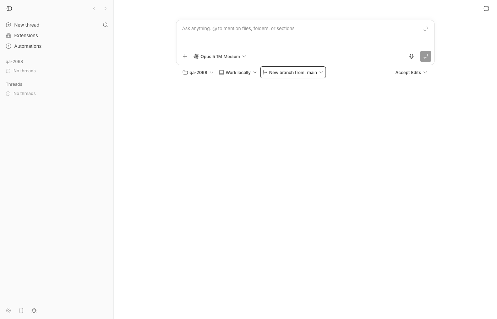
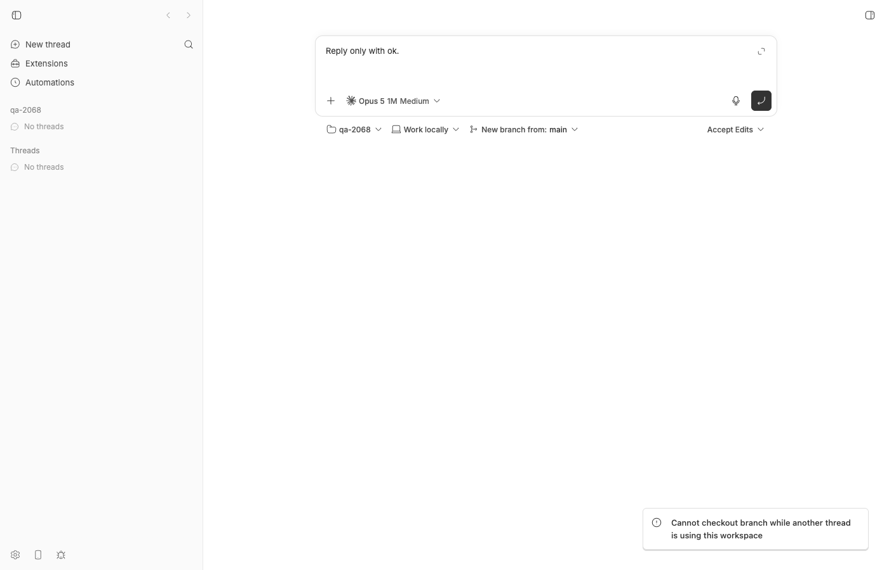
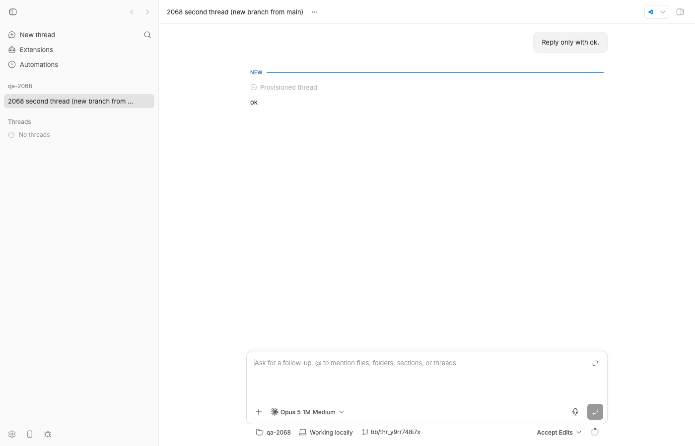

#2068 · Archived idle threads block branch checkout after the workspace is released
Verdict: REPRODUCED (live, through the web UI and the HTTP API, and as a failing vitest) · Root-cause confidence: high
1. TL;DR
In a project whose workspace is a plain local git checkout ("Work locally"), archive every thread, then start a new thread with the branch picker set to New branch from: main. bb refuses with 409 Cannot checkout branch while another thread is using this workspace, even though the project shows "No threads". The server protects a shared folder from a branch checkout while another thread is using it by asking the database whether any live thread points at that folder. That query (hasLiveThreadAtHostPath) filters on deleted_at IS NULL and status in starting/idle/active but never looks at archived_at. Archiving does not change a thread's status, so an archived idle thread satisfies the query forever and pins the workspace until the thread is deleted. The one-line fix (PR #2069) swaps the query's nonDeletedThreads() for the existing liveThreads() helper, which adds archived_at IS NULL; I verified the PR fixes the live repro and keeps the active-thread guard.
2. Claims vs findings
| Claim from the issue | Status | Evidence |
|---|---|---|
Creating a thread with "New branch from: main" in a local unmanaged workspace whose threads are all archived fails with Cannot checkout branch while another thread is using this workspace. | Verified | Live on my dev instance: POST /api/v1/threads → HTTP 409 with that exact message (step 4 below); same toast in the web UI (screenshot). DB showed only archived idle threads in the project. |
| The project had no unarchived threads, including hidden ones. | Verified (for my repro) | sqlite3 … "select id,status,archived_at,visibility from threads where project_id=…" → both rows archived, visible, status idle. |
bb thread stop does not help because stopping an idle thread is a no-op. | Verified | pnpm bb:dev thread stop thr_jzgzjh5wen printed "stopped", status stayed idle, retry still 409. Code: requestThreadStopForCurrentState only acts on active/starting/stopping threads (thread-lifecycle.ts#L1352-L1385). |
| Creating the thread without a branch checkout avoids the failure. | Verified | Same request without workspace.branch → HTTP 201 (step 5). Guard is gated on checksOutBranch. |
Mechanism: hasLiveThreadAtHostPath() uses nonDeletedThreads() and status ∈ starting/idle/active, never filters archivedAt; archiving preserves idle. | Verified | threads.ts#L1398-L1417, archiveThread only sets archivedAt. Repro vitest fails on base with { reason: 'live-thread' }. |
A liveThreads() helper that adds archivedAt IS NULL already exists. | Verified | threads.ts#L65-L71; every other "live" query in the file (e.g. listLiveThreadsInEnvironment) uses it. |
| The guard was introduced in #1049. | Verified | git log -S hasLiveThreadAtHostPath → bed45061f Scope the workspace path claim to the project (#1049). |
| Environment: bb-app 0.38.0, Linux x64, Node 26.7.0. | Unverified | I reproduced on macOS / Node 22 at fcada5a3b; the query is platform-independent and unchanged since #1049, so the platform does not matter. |
| The deterministic reproducer script in the comment reproduces the bug. | Verified (equivalent) | My vitest (section 4) is the same scenario plus a route-level case through createThreadFromRequest; both fail on base exactly as the comment's script prints. |
{kind=link}
3. Environment
- bb worktree at base
fcada5a3b88302acb9944aa74b11db4ecaa215a0(main, 2026-08-21).origin/mainahead by 3 commits (2ad4bfaae, 15f21ade7, b2e80352b), none touch the guard → not fixed on main. - macOS 26.5.2 (arm64), Node v22.23.1, pnpm workspace; provider used for the two real turns:
claude-code(Claude Code CLI 2.1.238); codex-cli 0.149.0 present but unused. - Own dev instance via
scripts/bb-dev-app current: Apphttp://localhost:13684, Serverhttp://localhost:21684, Host daemon127.0.0.1:29684, data dir~/.bb-dev/bb-machines-bee.getbb.app-checkouts-bb-.claude-worktrees-wf_21e66a79-f02-15-b5cd6c3c9fb7(deleted at cleanup). - Scratch repo
/tmp/bb-2068-repo(one commit onmain), projectproj_2xirasxmz4, hosthost_eqirmyrp9n.
4. Minimal reproduction
4a. Unit-level (no running app, ~4 s)
- Save the test below as
apps/server/test/threads/repro-2068-archived-thread-blocks-checkout.test.ts(copy in 2068/repro/). - Run from
apps/server:pnpm exec vitest run test/threads/repro-2068-archived-thread-blocks-checkout.test.ts - Expected: 3 passed. Actual on
fcada5a3b(full log):RUN v4.1.1 /Users/sawyerhood/.bb-machines/bee.getbb.app/checkouts/bb/.claude/worktrees/wf_21e66a79-f02-15/apps/server ❯ @bb/server test/threads/repro-2068-archived-thread-blocks-checkout.test.ts (3 tests | 2 failed) 264ms × unmanagedAttachRefusal: an archived idle thread must not count as a live workspace user 137ms × createThreadFromRequest: 'New branch from main' in a project whose only thread is archived must not 409 70ms ⎯⎯⎯⎯⎯⎯⎯ Failed Tests 2 ⎯⎯⎯⎯⎯⎯⎯ FAIL @bb/server test/threads/repro-2068-archived-thread-blocks-checkout.test.ts > #2068 archived idle thread and the branch-checkout guard > unmanagedAttachRefusal: an archived idle thread must not count as a live workspace user AssertionError: expected { reason: 'live-thread', …(1) } to be null - Expected: null + Received: { "message": "Cannot checkout branch while another thread is using this workspace", "reason": "live-thread", } ❯ test/threads/repro-2068-archived-thread-blocks-checkout.test.ts:55:9 53| projectId: project.id, 54| }), 55| ).toBeNull(); | ^ 56| }); 57| }); ❯ withTestHarness test/helpers/test-app.ts:283:18 ❯ test/threads/repro-2068-archived-thread-blocks-checkout.test.ts:21:5 ⎯⎯⎯⎯⎯⎯⎯⎯⎯⎯⎯⎯⎯⎯⎯⎯⎯⎯⎯⎯⎯⎯⎯⎯[1/2]⎯ FAIL @bb/server test/threads/repro-2068-archived-thread-blocks-checkout.test.ts > #2068 archived idle thread and the branch-checkout guard > createThreadFromRequest: 'New branch from main' in a project whose only thread is archived must not 409 Error: Cannot checkout branch while another thread is using this workspace ❯ assertUnmanagedHostPathIsAttachable src/services/threads/thread-create.ts:391:11 389| }); 390| if (refusal) { 391| throw new ApiError(409, "invalid_request", refusal.message); | ^ 392| } 393| } ❯ createThreadFromRequest src/services/threads/thread-create.ts:785:9 ❯ test/threads/repro-2068-archived-thread-blocks-checkout.test.ts:81:22 ❯ withTestHarness test/helpers/test-app.ts:283:12 ❯ test/threads/repro-2068-archived-thread-blocks-checkout.test.ts:60:5 ⎯⎯⎯⎯⎯⎯⎯⎯⎯⎯⎯⎯⎯⎯⎯⎯⎯⎯⎯⎯⎯⎯⎯⎯[2/2]⎯ Test Files 1 failed (1) Tests 2 failed | 1 passed (3) Start at 08:53:03 Duration 3.49s (transform 1.40s, setup 0ms, import 3.15s, tests 264ms, environment 0ms)The control test (unarchivedactivethread still refuses) passes, so the guard itself is fine; only archived rows leak through.
// Repro for get-bb/bb#2068: archived idle threads keep the workspace "live"
// for the branch-checkout guard in unmanagedAttachRefusal().
import { archiveThread, getThread, listEnvironments } from "@bb/db";
import { describe, expect, it } from "vitest";
import { createThreadFromRequest } from "../../src/services/threads/thread-create.js";
import { unmanagedAttachRefusal } from "../../src/services/threads/workspace-path-claims.js";
import { textInput } from "../helpers/prompt-input.js";
import {
seedEnvironment,
seedHostSession,
seedProjectWithSource,
seedThread,
} from "../helpers/seed.js";
import { withTestHarness } from "../helpers/test-app.js";
const HOST_DATA_DIR = "/home/agent/.bb";
const SHARED_PATH = "/tmp/repro-2068-workspace";
describe("#2068 archived idle thread and the branch-checkout guard", () => {
it("unmanagedAttachRefusal: an archived idle thread must not count as a live workspace user", async () => {
await withTestHarness(async (harness) => {
const { host } = seedHostSession(harness.deps, { id: "host-2068-unit" });
const { project } = seedProjectWithSource(harness.deps, {
hostId: host.id,
name: "Repro 2068",
path: SHARED_PATH,
});
const environment = seedEnvironment(harness.deps, {
hostId: host.id,
projectId: project.id,
path: SHARED_PATH,
});
const thread = seedThread(harness.deps, {
projectId: project.id,
environmentId: environment.id,
status: "idle",
});
// Same write the archive route performs (thread-archive.ts ->
// archiveThreadAndReleaseChildren -> archiveThread).
archiveThread(harness.deps.db, harness.deps.hub, thread.id);
const archived = getThread(harness.deps.db, thread.id);
expect(archived?.archivedAt).not.toBeNull();
expect(archived?.status).toBe("idle");
// FAILS on fcada5a3b: returns { reason: "live-thread", ... }
expect(
unmanagedAttachRefusal(harness.deps.db, {
checksOutBranch: true,
dataDir: HOST_DATA_DIR,
hostId: host.id,
path: SHARED_PATH,
projectId: project.id,
}),
).toBeNull();
});
});
it("createThreadFromRequest: 'New branch from main' in a project whose only thread is archived must not 409", async () => {
await withTestHarness(async (harness) => {
const { host } = seedHostSession(harness.deps, { id: "host-2068-route" });
const { project } = seedProjectWithSource(harness.deps, {
hostId: host.id,
name: "Repro 2068 route",
path: SHARED_PATH,
});
const environment = seedEnvironment(harness.deps, {
hostId: host.id,
projectId: project.id,
path: SHARED_PATH,
});
const oldThread = seedThread(harness.deps, {
projectId: project.id,
environmentId: environment.id,
status: "idle",
});
archiveThread(harness.deps.db, harness.deps.hub, oldThread.id);
// FAILS on fcada5a3b with ApiError 409
// "Cannot checkout branch while another thread is using this workspace"
const thread = await createThreadFromRequest(harness.deps, {
environment: {
type: "host",
hostId: host.id,
workspace: {
type: "unmanaged",
path: SHARED_PATH,
branch: { kind: "new", baseBranch: "main" },
},
},
input: textInput("Reply only with ok."),
origin: "app",
projectId: project.id,
providerId: "codex",
startedOnBehalfOf: null,
});
expect(thread.projectId).toBe(project.id);
expect(listEnvironments(harness.deps.db, project.id)).toHaveLength(1);
});
});
it("control: an unarchived active thread at the path still refuses the checkout", async () => {
await withTestHarness(async (harness) => {
const { host } = seedHostSession(harness.deps, { id: "host-2068-ctrl" });
const { project } = seedProjectWithSource(harness.deps, {
hostId: host.id,
name: "Repro 2068 control",
path: SHARED_PATH,
});
const environment = seedEnvironment(harness.deps, {
hostId: host.id,
projectId: project.id,
path: SHARED_PATH,
});
seedThread(harness.deps, {
projectId: project.id,
environmentId: environment.id,
status: "active",
});
expect(
unmanagedAttachRefusal(harness.deps.db, {
checksOutBranch: true,
dataDir: HOST_DATA_DIR,
hostId: host.id,
path: SHARED_PATH,
projectId: project.id,
}),
).toMatchObject({ reason: "live-thread" });
});
});
});
4b. Live, through the API and the UI
- Start a dev instance and create a scratch repo + project:
scripts/bb-dev-app current # prints App/Server URLs; mine: server http://localhost:21684 mkdir -p /tmp/bb-2068-repo && cd /tmp/bb-2068-repo && git init -q -b main && echo hello > README.md && git add . && git commit -qm init curl -s http://localhost:21684/api/v1/hosts # note the host id (host_eqirmyrp9n) curl -s -X POST http://localhost:21684/api/v1/projects -H 'content-type: application/json' \ -d '{"name":"qa-2068","source":{"type":"local_path","path":"/tmp/bb-2068-repo","hostId":"host_eqirmyrp9n"}}' # → {"id":"proj_2xirasxmz4", ...} - Create one ordinary thread in the local workspace (no branch checkout) and wait for it to go idle (step1-create-thread.json):
curl -s -X POST http://localhost:21684/api/v1/threads -H 'content-type: application/json' -d @step1-create-thread.json # → HTTP 201 {"id":"thr_jzgzjh5wen","status":"starting",...} # poll until: status=idle environmentId=env_uvfmh7vcmz archivedAt=None{ "projectId": "proj_2xirasxmz4", "providerId": "claude-code", "origin": "app", "title": "2068 first thread", "permissionMode": "accept-edits", "input": [{"type": "text", "text": "Reply only with ok."}], "environment": {"type": "host", "hostId": "host_eqirmyrp9n", "workspace": {"type": "unmanaged", "path": "/tmp/bb-2068-repo"}} } - Archive it and confirm the project has no unarchived threads:
pnpm bb:dev thread archive thr_jzgzjh5wen # Thread thr_jzgzjh5wen archived sqlite3 <data-dir>/bb.db "select id,status,archived_at,deleted_at,visibility from threads where project_id='proj_2xirasxmz4';" # thr_jzgzjh5wen|idle|1787327679973||visible
- Create a thread with New branch from: main in the same folder (step3-create-branch-thread.json):
curl -s -X POST http://localhost:21684/api/v1/threads -H 'content-type: application/json' -d @step3-create-branch-thread.json -w '\nHTTP %{http_code}\n' expected: HTTP 201 and a thread whose environment checks out bb/<thread-id> from main actual: {"code":"invalid_request","message":"Cannot checkout branch while another thread is using this workspace"} HTTP 409{ "projectId": "proj_2xirasxmz4", "providerId": "claude-code", "origin": "app", "title": "2068 second thread (new branch from main)", "permissionMode": "accept-edits", "input": [{"type": "text", "text": "Reply only with ok."}], "environment": {"type": "host", "hostId": "host_eqirmyrp9n", "workspace": {"type": "unmanaged", "path": "/tmp/bb-2068-repo", "branch": {"kind": "new", "baseBranch": "main"}}} }bb thread stop thr_jzgzjh5wenreports "stopped" but the status staysidleand the retry is still 409. - Control: the same request without
"branch"returnsHTTP 201(thr_k9yxf8mk9i), confirming the refusal comes from the branch-checkout guard only.
The same flow in the web UI (both threads archived first, so the sidebar shows "No threads"):

qa-2068 lists "No threads" (both archived), environment "Work locally", branch picker set to "New branch from: main".
/api/v1/threads. No thread is created.Repro files: 2068/repro/ (test, request bodies, responses, vitest logs, PR diff).
5. Root cause
createThreadFromRequest → assertUnmanagedHostPathIsAttachable (thread-create.ts#L379-L393) → unmanagedAttachRefusal (workspace-path-claims.ts#L70-L79):
if (
args.checksOutBranch &&
hasLiveThreadAtHostPath(db, { hostId: args.hostId, path: args.path })
) {
return {
reason: "live-thread",
message:
"Cannot checkout branch while another thread is using this workspace",
};
}
hasLiveThreadAtHostPath (packages/db/src/data/threads.ts#L1398-L1417) is the only query behind that decision:
export interface HasLiveThreadAtHostPathArgs {
hostId: string;
path: string;
}
/**
* Whether any project has a live thread working in one physical directory.
* A branch checkout rewrites the working tree, so it must not run while
* another project's agent uses the same folder.
*/
export function hasLiveThreadAtHostPath(
db: DbConnection,
args: HasLiveThreadAtHostPathArgs,
): boolean {
const row = db
.select({ id: threads.id })
.from(threads)
.innerJoin(environments, eq(threads.environmentId, environments.id))
.where(
and(
eq(environments.hostId, args.hostId),
eq(environments.path, args.path),
nonDeletedThreads( // <-- deleted_at IS NULL only; archived_at is ignored
inArray(threads.status, [...NON_TERMINAL_THREAD_STATUSES]), // starting | idle | active
),
),
)
.get();
return row !== undefined;
}
The two predicate helpers at the top of the file (#L65-L71) make the distinction explicit; this query picked the weaker one despite being named "live":
function nonDeletedThreads(...where: ThreadWhere[]): ThreadWhere {
return and(...where, isNull(threads.deletedAt));
}
function liveThreads(...where: ThreadWhere[]): ThreadWhere {
return nonDeletedThreads(...where, isNull(threads.archivedAt));
}
Archiving (archiveThread) writes only archivedAt; the archive route (thread-archive.ts) stops an active thread (which moves it to stopping, a status the guard already ignores) but an idle thread has nothing to stop and keeps status = 'idle':
export function archiveThread(db, notifier, id) {
const now = Date.now();
const updated = db
.update(threads)
.set({ archivedAt: now, updatedAt: now }) // status is untouched: an idle thread stays "idle"
.where(eq(threads.id, id))
.returning()
.get();
...
}
So after archiving, the row is {status: 'idle', archived_at: <ts>, deleted_at: NULL}, the INNER JOIN environments still matches the folder's environment (archiving does not detach the environment; unmanaged environments are never cleaned up), and the guard reports a live thread indefinitely. The only ways out on base are to delete the thread (removes history) or to not request a branch checkout, exactly as the issue says. Nothing else depends on this query, so the blast radius is the branch-checkout path of thread create (the update_environment_directory tool calls the same helper with checksOutBranch: false and is unaffected).
Deeper observations (not bugs in this issue, but worth knowing):
- The guard is intentionally cross-project, but it is also cross-thread within the project: any unarchived idle thread in a local workspace blocks "New branch from" for a sibling thread (verified on the PR build: with one unarchived idle thread present the request is still 409). Users must archive the previous thread before they can branch. That matches the issue's stated expectation, but the UI gives no hint about which thread is holding the folder.
NON_TERMINAL_THREAD_STATUSESexcludesstopping, so a thread whose stop RPC is still in flight (agent process possibly still writing) does not block a checkout. Pre-existing, unchanged by the PR.
6. Proposed fix (first principles)
Use the existing liveThreads() predicate in hasLiveThreadAtHostPath so the definition of "live" matches every other live-thread query in the file (deleted_at IS NULL AND archived_at IS NULL), and keep the status filter. That is exactly the one-line change in PR #2069. Safety argument: an archived thread is never resumed without being unarchived first (unarchive clears archivedAt and the guard applies again), and archiving an active thread synchronously marks it stopping, which the guard already ignored, so excluding archived rows does not open a new window in which an agent is working in the folder. What could go wrong: nothing new; the residual race (checkout while a stopping thread's turn is still being interrupted) exists before and after. A follow-up could include stopping threads that still have an active turn, and the 409 message could name the blocking thread.
7. PR review
PR #2069 — "Allow branch checkout after workspace threads are archived" (hemaaanth, agent-generated)
What it changes: one line in packages/db/src/data/threads.ts (nonDeletedThreads( → liveThreads( inside hasLiveThreadAtHostPath) plus one new test in apps/server/test/threads/workspace-path-claims.test.ts ("allows branch checkout after every thread at the path is archived"). Full diff: pr-2069.diff.
diff --git a/apps/server/test/threads/workspace-path-claims.test.ts b/apps/server/test/threads/workspace-path-claims.test.ts
index 91a1b891f6..7224bf6bc2 100644
--- a/apps/server/test/threads/workspace-path-claims.test.ts
+++ b/apps/server/test/threads/workspace-path-claims.test.ts
@@ -1,3 +1,4 @@
+import { archiveThread } from "@bb/db";
import { describe, expect, it } from "vitest";
import { unmanagedAttachRefusal } from "../../src/services/threads/workspace-path-claims.js";
import {
@@ -141,4 +142,39 @@ describe("unmanagedAttachRefusal", () => {
).toMatchObject({ reason: "live-thread" });
});
});
+
+ it("allows branch checkout after every thread at the path is archived", async () => {
+ await withTestHarness(async (harness) => {
+ const { host } = seedHostSession(harness.deps, {
+ id: "host-claims-archived",
+ });
+ const sharedPath = "/tmp/archived-shared";
+ const { project } = seedProjectWithSource(harness.deps, {
+ hostId: host.id,
+ name: "Archived",
+ path: sharedPath,
+ });
+ const environment = seedEnvironment(harness.deps, {
+ hostId: host.id,
+ projectId: project.id,
+ path: sharedPath,
+ });
+ const thread = seedThread(harness.deps, {
+ projectId: project.id,
+ environmentId: environment.id,
+ status: "idle",
+ });
+ archiveThread(harness.deps.db, harness.deps.hub, thread.id);
+
+ expect(
+ unmanagedAttachRefusal(harness.deps.db, {
+ checksOutBranch: true,
+ dataDir: HOST_DATA_DIR,
+ hostId: host.id,
+ path: sharedPath,
+ projectId: project.id,
+ }),
+ ).toBeNull();
+ });
+ });
});
diff --git a/packages/db/src/data/threads.ts b/packages/db/src/data/threads.ts
index eda475b8b3..f1c97c02a4 100644
--- a/packages/db/src/data/threads.ts
+++ b/packages/db/src/data/threads.ts
@@ -1411,7 +1411,7 @@ export function hasLiveThreadAtHostPath(
and(
eq(environments.hostId, args.hostId),
eq(environments.path, args.path),
- nonDeletedThreads(
+ liveThreads(
inArray(threads.status, [...NON_TERMINAL_THREAD_STATUSES]),
),
),
Root cause or symptom? Root cause. The query was the single source of the wrong answer; the change aligns it with the codebase's own definition of "live" and keeps the non-terminal status filter. Correct layer (a db data-access predicate; no server/daemon boundary involved). No wire shapes change, so no HOST_DAEMON_PROTOCOL_VERSION bump is needed. No casts, no behaviour change beyond the intended one.
Findings:
| Where | Severity | Finding |
|---|---|---|
packages/db/src/data/threads.ts:1414 | none | Change is correct and minimal. I tried to break it with: archived active thread (archive path marks it stopping synchronously, and stopping was never in the status list, so no new window); unarchive (restores the block); a second unarchived idle thread (still 409, guard intact); second project sharing the path (still cross-project). |
apps/server/test/threads/workspace-path-claims.test.ts:146-179 | low | Test archives via the raw archiveThread db call rather than the archive service/route, and only exercises unmanagedAttachRefusal directly. Acceptable (the route ends in the same write), but a createThreadFromRequest case with branch: {kind:"new"} would guard the actual user path; my repro test includes one and passes on the PR. |
| PR description | low | Verification section lists direct pnpm --filter runs (AGENTS.md asks for turbo) and a "review receipt" path on the author's machine; cosmetic. Branch is based on 6be45053b (a week behind main) but cherry-picks cleanly onto fcada5a3b; GitHub reports MERGEABLE/CLEAN. |
Doc comment threads.ts:1393-1397 | nit | Could state that archived threads are excluded because archive settles the runtime; not required. |
Tests I ran:
- On the PR branch (
0046679d9):vitest runof my repro test +workspace-path-claims.test.ts+thread-create-shared-workspace-path.test.ts→ 12/12 pass (log). The two repro cases that fail on base pass; the active-thread control still refuses. - Cherry-picked the PR commit onto
fcada5a3b(branchpr2069-on-base), ranpnpm exec turbo run test --filter=@bb/server --filter=@bb/db --force→@bb/db406/406,@bb/server1901/1901 (log). - Restarted my dev instance on
pr2069-on-basewith the same DB (two archived idle threads in the folder) and replayed step 4:HTTP 201, threadthr_y9rr748i7xran, andgit -C /tmp/bb-2068-repo branchshows* bb/thr_y9rr748i7x. Then, with that new thread unarchived and idle, the same request is again 409 — the guard still protects a genuinely live thread.

bb/thr_y9rr748i7x.Verdict: MERGE. Fixes the root cause with the smallest correct change, keeps the safety guard, and has regression coverage. Optional follow-ups: add a route-level test, and have the 409 name the blocking thread.
8. Related issues
- #1049 "Scope the workspace path claim to the project" — introduced
hasLiveThreadAtHostPathand this guard (fixes #1043). - #1624 "Support discovered worktrees and continuing existing branches" — adjacent branch/workspace UX.
- No other open issue mentions the "Cannot checkout branch while another thread is using this workspace" message.
9. Appendix
Commands run (in order)
gh issue view 2068 --comments; gh pr view 2069; gh pr diff 2069 git checkout fcada5a3b; git fetch origin main; git log fcada5a3b..origin/main --oneline -- packages/db/src/data/threads.ts apps/server/src/services/threads/workspace-path-claims.ts # (empty) pnpm install --frozen-lockfile --prefer-offline; pnpm exec turbo run build git log --format='%h %ad %s' --date=short -S hasLiveThreadAtHostPath -- packages/db/src/data/threads.ts # bed45061f 2026-08-06 (#1049) # write apps/server/test/threads/repro-2068-archived-thread-blocks-checkout.test.ts cd apps/server && pnpm exec vitest run test/threads/repro-2068-archived-thread-blocks-checkout.test.ts # 2 failed / 1 passed on base scripts/bb-dev-app current # App :13684, Server :21684, Host daemon :29684 git init /tmp/bb-2068-repo …; curl POST /api/v1/projects … # proj_2xirasxmz4 curl POST /api/v1/threads -d @step1-create-thread.json # thr_jzgzjh5wen → idle pnpm bb:dev thread archive thr_jzgzjh5wen curl POST /api/v1/threads -d @step3-create-branch-thread.json # HTTP 409 pnpm bb:dev thread stop thr_jzgzjh5wen; (retry) → HTTP 409 curl POST /api/v1/threads (no branch) # HTTP 201 thr_k9yxf8mk9i; then archived doobie (headless Chrome) → compose view, Branch picker → New branch → main → type prompt → Enter # toast 409 (screenshots) gh pr checkout 2069; pnpm exec turbo run build --filter=@bb/server; vitest run (3 files) # 12 passed git checkout -b pr2069-on-base fcada5a3b; git cherry-pick 0046679d9 scripts/bb-dev-app current (pr2069-on-base); curl POST … step3 → HTTP 201 thr_y9rr748i7x; git branch → bb/thr_y9rr748i7x pnpm exec turbo run test --filter=@bb/server --filter=@bb/db --force # 406 + 1901 passed pnpm dev:stop; cleanup
vitest on PR #2069 branch
RUN v4.1.1 /Users/sawyerhood/.bb-machines/bee.getbb.app/checkouts/bb/.claude/worktrees/wf_21e66a79-f02-15/apps/server
Test Files 3 passed (3)
Tests 12 passed (12)
Start at 08:57:12
Duration 3.52s (transform 4.73s, setup 0ms, import 8.17s, tests 1.56s, environment 0ms)
Live responses
step3 (base fcada5a3b): HTTP 409 {"code":"invalid_request","message":"Cannot checkout branch while another thread is using this workspace"}
step5 (pr2069-on-base): HTTP 201 {"id":"thr_y9rr748i7x","projectId":"proj_2xirasxmz4","environmentId":"env_uvfmh7vcmz","providerId":"claude-code","title":"2068 second thread (new branch from main)",...,"status":"starting","archivedAt":null,...}
/tmp/bb-2068-repo after step5: * bb/thr_y9rr748i7x
main
threads table before step5: thr_jzgzjh5wen|idle|1787327679973 thr_k9yxf8mk9i|idle|1787327768934 (both archived, deleted_at NULL)
Other artifacts: install.log, build.log, dev-app-start.log, dev-app-restart-pr.log, step1-response.json, step3-response.json, step4-nobranch-response.json, step5-pr-response.json.